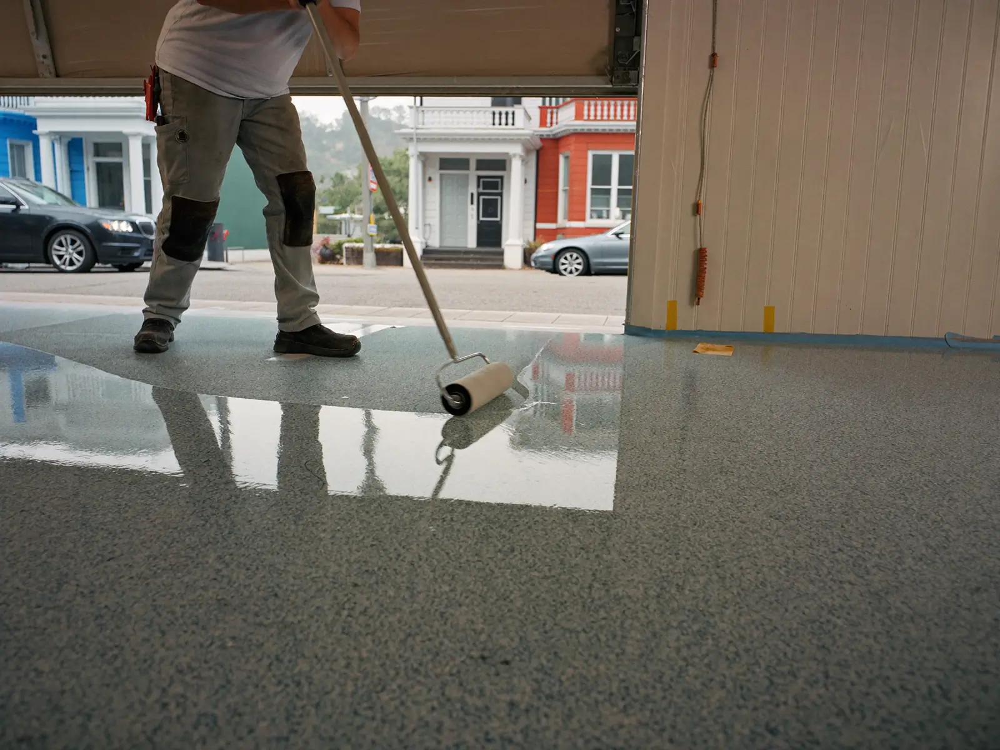

A fast-curing, UV-stable floor coating that cures well on cool slabs — so the garage is back in service in about a day instead of most of a week.
Call Now for a Free EstimateTell us about the floor and we'll call you back the same working day.
Prefer to talk? Call (415) 792-5106

Polyaspartic floor coating in San Francisco is the go-to choice when you can't give up the garage for long or the slab stays cool most of the year. It's a type of polyurea that goes on like epoxy but cures in hours, even on chilly, foggy days. Many homeowners use it as the full system, while others pair an epoxy base with a polyaspartic topcoat.
The prep is the same as any professional floor coating: diamond grinding, crack repair and a moisture test. Polyaspartic doesn't forgive poor prep, so this part never gets skipped.
Because it cures quickly, the coating is mixed in smaller batches and spread fast. A typical system is a pigmented base coat, a full flake broadcast and a clear polyaspartic topcoat, often all in one day.
The result looks much like a flake epoxy floor, with a clear finish that stays clear in direct sun.
A polyaspartic coating makes the most sense in a few specific situations.
Epoxy cures through a chemical reaction that slows down as temperature drops. On a slab that sits in the 50s, a standard epoxy can take much longer to harden, and it can stay soft enough to pick up dust or footprints.
Damp air adds another problem. If the slab temperature gets close to the dew point, moisture can form on the surface and leave a cloudy or weak finish. Neighborhoods near the ocean see those conditions much of the year.
Polyaspartic chemistry keeps curing at lower temperatures, which is why it's a good match for cool garages. We still check slab temperature and dew point before every coat.
Every floor is quoted in person at a free estimate. These details shape a polyaspartic quote:
You'll get a written quote at the visit. Schedule your free polyaspartic estimate.
Both coatings make a great garage floor when the slab is prepped correctly. The right one depends on your schedule, temperature and sun exposure.
| Polyaspartic | Epoxy | |
|---|---|---|
| Return to service | About a day | A few days |
| Cool-weather install | Cures well on cool slabs | Slows down on cold slabs |
| Sunlight | Stays clear | Can amber without a UV topcoat |
| Working time | Short, installed in small batches | Longer, easier to work |
Many floors use both: an epoxy base for build and bond, topped with polyaspartic for UV stability and wear. See garage floor epoxy for the standard epoxy system.
Most polyaspartic garage floors can take foot traffic within a few hours and cars in about a day. The exact time depends on the slab temperature and the system, and you get your timeline at the estimate.
It is better in some ways and not in others. Polyaspartic cures faster, works on cooler slabs and stays clear in sunlight, while epoxy gives a longer working time and builds thickness well. Many installers combine the two.
Some polyaspartic products have a noticeable odor during install that fades quickly as the coating cures. We ventilate the garage, keep the house door closed and use products that meet Bay Area air quality limits.
No. Old paint and sealer are ground off first so the new coating bonds to bare concrete. Coating over paint is one of the main reasons floors peel.
Want a decorative finish instead? See metallic epoxy flooring. Comparing every option? Visit our floor coating services page.
Call for a free estimate — we'll check the slab and tell you whether a one-day polyaspartic system fits your floor.
Call (415) 792-5106 for a Free Estimate Request an Estimate Online